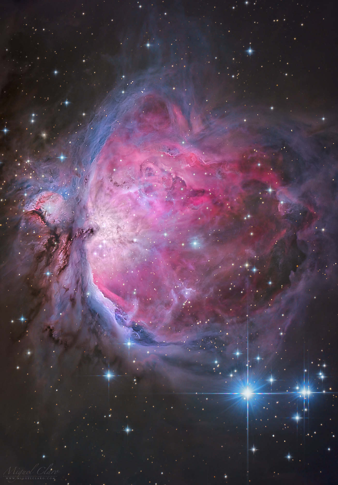
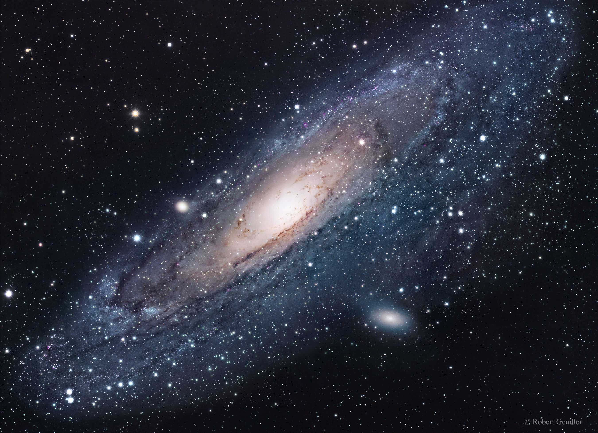

Here are the Top 5 easiest targets for beginners:
5. The California Nebula - Named for having the outline of California, NGC 1499 is a cloud of hydrogen alpha gas in the Perseus constellation.
4. The Pleiades - also known as Messiar 45, the Pleiades is an open star cluster located in the constellation Taurus and is 445 light years away from earth.

3. The Horsehead Nebula, also known as Barnard 33, is a dark nebula found in the orion constellation. Its named after its distinct horse-head shape and is about 1500 light years away.
2. The Orion Nebula, also known as Messier 42, is a bright nebula located in the orion constellation. This is an area in the universe where new stars are forming, and is known as a stellar nursery. It is the closest nursery to earth and is 1,344 light years away.

1. Andromeda Galaxy, also known as M31, is the closest spiral galaxy to the Milky Way and is about 2.5 million light years away. It is visible to the naked eye in very dark skies and makes a great target for astrophotography.

Return to Top of Page